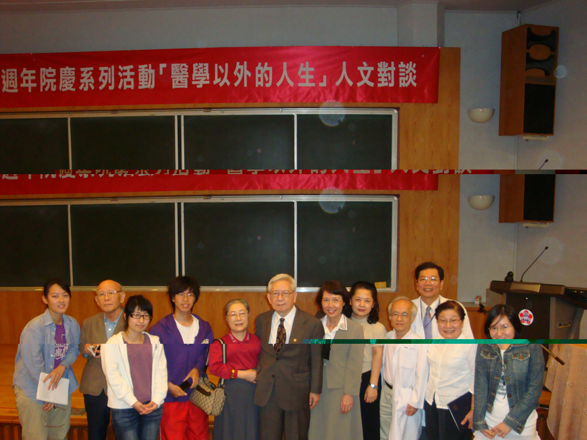
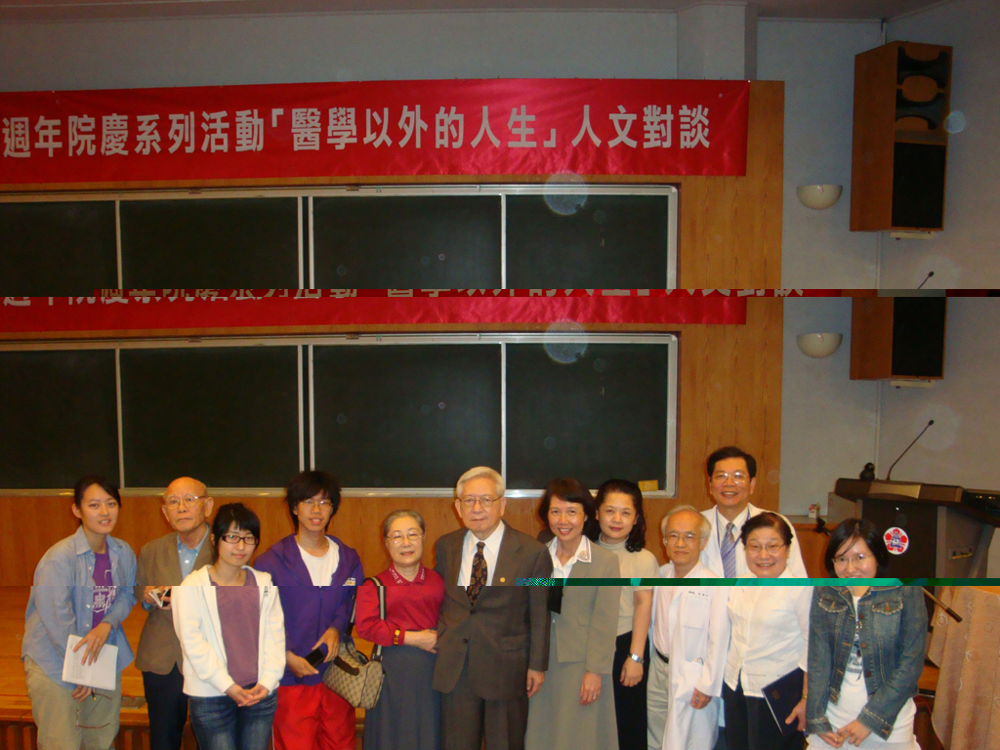

20070508黃崑巖回憶錄 成大醫學院創院始末 新書發表會

20090223 黃崑巖演講醫學以外的人生
20090223 黃崑巖演講醫學以外的人生
哲人其萎精神永存：永懷與感恩
驚聞大家所敬愛的黃崑巖院長不幸在西元2012年2月20日病逝美國，剎那間心中哀慟逾恆而無法自已，腦中一片空白而無法思考，輾轉反側不得成眠。
從悲痛後靜思，想藉此向黃院長表示永懷與感恩，因為很榮幸從1989年起於成大醫學院受教門下，1999年之前向他學習醫學教育改革，2001年之後陪他評鑑幾家醫學院， 2003年一起為教育部編撰「SARS的生聚教訓」一書，期間幫他代打幾場演講或擔任演講的對談人，偶而擔任他心血來潮創意思考的思辯顧問。但是遺憾的是，答應陪他寫的功課還有兩本書與一篇文章尚未完成，或許就留待來世吧。
黃院長有許多睿智名言是個人的心靈支柱，例如「不想走完不起程」。許多故事是既幽默又有高深的管理哲學，例如「兩封信的故事」。他曾在愛丁堡開會時寫明信片回來鼓勵「臨床溝通演練」的課堂改革提升了醫學教育境界，也在1999年為這堂課寫了一幅書法以示鼓勵。所以他名符其實是個人從事醫學教育及醫療工作者的精神導師、典範及偶像。
也不禁回想在1989年初入醫學教育之門時蒙他親自召見，教導「做好醫療才是教學與研究的基礎」。在艱苦漫長的醫學生涯曾遇到瓶頸時，教導「困頓時唯勇者不移」。感謝他大膽從1991年起用當時資淺的我擔任康委會召集人，主編醫訊，還鼓勵陳誠仁教授與我組織成杏合唱團，並以募集創團經費來表示支持。在1998年8月他督促我接下他於中華日報的「岫廬集」專欄，這也是「醫學與人文的對話」專欄的由來，這十三年半的每週日寫稿過程曾想偷懶但卻不敢一刻鬆懈，無一不是受到他的精神感召。因而出版的兩本書，他都親自做序，其中他為2010年出版的「良醫多自苦中來」做序時已經體力變差卻仍欣然為之，每思於此，對他的提攜之情真是感動到熱淚盈眶。
如今驚聞噩耗，真是悲慟莫名，無可寄情，唯有引用禮記檀弓記載子貢對孔子的一段話可以形容：「泰山其頹，則吾將安仰？梁木其壞，哲人其萎，則吾將安放？」誠是斯言。但哲人其萎，仍然精神永存，寄望黃門弟子們，體認台灣醫療與醫教改革其實尚未成功，但不必懷憂喪志，應該是記取其理想壯志與精神力量，擇真善而固執，持續努力加油吧。
|
 20090223 黃崑巖演講醫學以外的人生 |